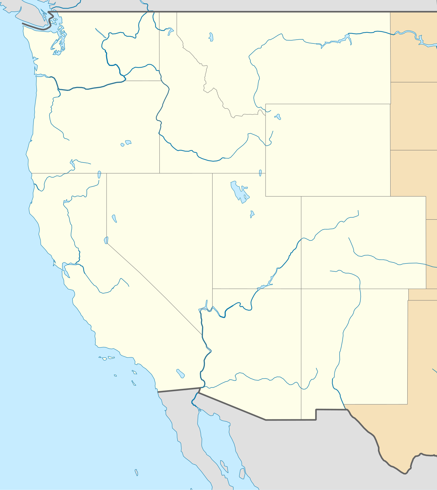

Drag the systems onto the map!
H
H
H
L
L
L
Main Ideas (SEEd 6.3.2)
- Air always moves from areas of High pressure to Low pressure.
- Low pressure (L) air rises, cools, and forms clouds and storms.
- High pressure (H) air sinks, bringing clear, calm skies.
Vocabulary
High Pressure
Heavy, sinking air. Usually means fair weather.
Low Pressure
Light, rising air. Usually means cloudy or rainy weather.
Cold Front
The leading edge of a cooler air mass (blue line with spikes).
Wind
The movement of air from high to low pressure.